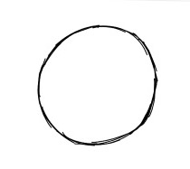
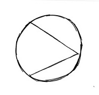
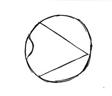
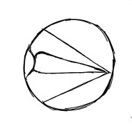
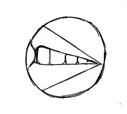
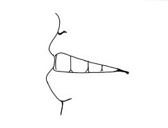
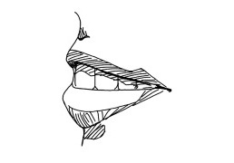

LIPS: PROFILE VIEW
This Tutorial will teach you the basics on how to draw the front view of the face. It is a step by steo by step in-dept tutorial, that teach you all the way from the basic shape of the face to the shading and details.
STEP 1:

The palm of our hands are shaped liked ovals. So the first step here would be to draw an oval. Fairly simple!
STEP 2:

Next Draw a trapazoid shape surrounding the oval, because our palms are not literally ovals. This will ultimately be the base in order to add on fingers in the next step.
STEP 3:

Now for the thumb draw a triangle, which is where the thumb joines the side of the palm. For thje fingers, make a rough sketch as to how long they will be. For the hands, the pinky is always the lowest, then the ring finger is the next highest, then the index fiinger is higher, and finally the middle finger is the highest.
STEP 4:

Now for the triangle, add on the thumb so that it's facing diagonally away from the palm. Notince the curves on the thumb. For the fingers, make sure to draw them within the guidlines you initially made.
STEP 5:

Remove the structure lines to get a basic shape of the hand.
STEP 6:

Shade based on where the light source is coming from. In this case the light source is coming from the top left. Notice the bumps on the sides of the palm and the dent in the center when shading. To learn more about shading refer to the forms in the Fundamentals of art.
STEP 7:

Shade based on where the light source is coming from. In this case the light source is coming from the top left. Notice the bumps on the sides of the palm and the dent in the center when shading. To learn more about shading refer to the forms in the Fundamentals of art.
STEP 8:

Shade based on where the light source is coming from. In this case the light source is coming from the top left. Notice the bumps on the sides of the palm and the dent in the center when shading. To learn more about shading refer to the forms in the Fundamentals of art.
STEP 9:
Shade based on where the light source is coming from. In this case the light source is coming from the top left. Notice the bumps on the sides of the palm and the dent in the center when shading. To learn more about shading refer to the forms in the Fundamentals of art.